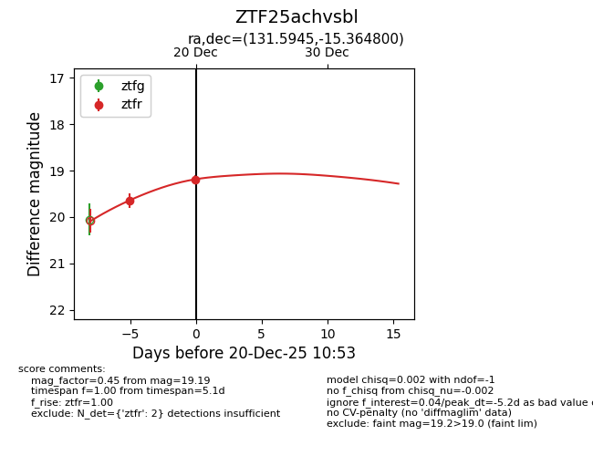
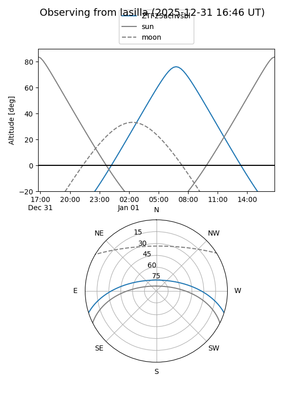
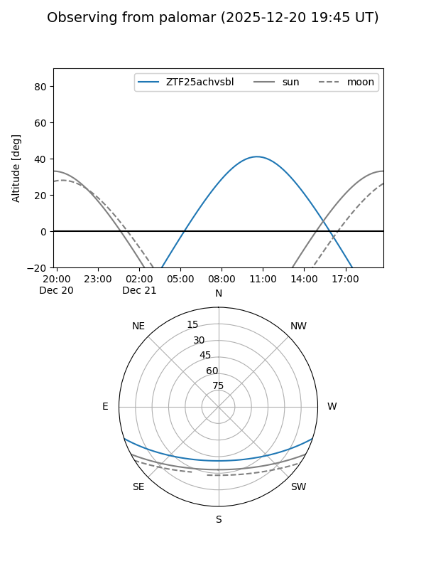
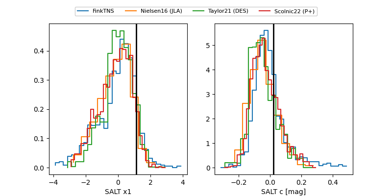

ZTF25achvsbl
Target ZTF25achvsbl at 2025-12-20 10:55
Aliases and brokers:
FINK: fink-portal.org/ZTF25achvsbl
Lasair: lasair-ztf.lsst.ac.uk/objects/ZTF25achvsbl
ALeRCE: alerce.online/object/ZTF25achvsbl
alt names
ZTF25achvsbl (ztf,fink_ztf)
Coordinates:
equatorial (ra, dec) = 131.5945,-15.36480
equatorial (HMS+DMS) = 08:46:22.68,-15:21:53.28
galactic (l, b) = (240.8066,+16.96326)
Flags:
Photometry:
last ztfr=19.19
2 ztfr detections
Lightcurve

Visibility


Additional plots
